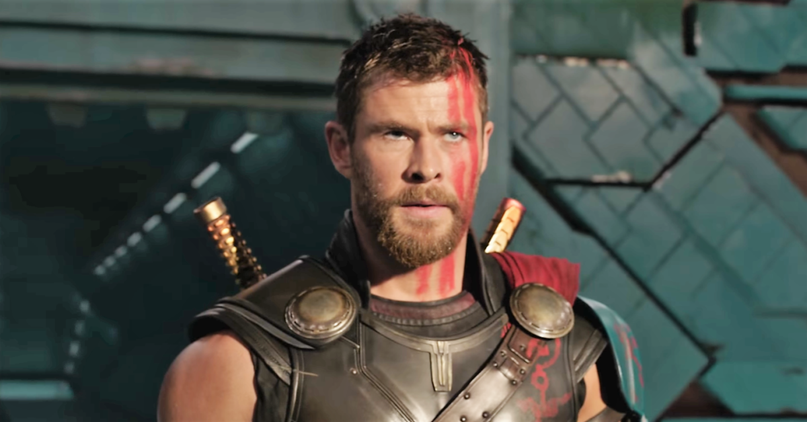

| Homepage | Movie List | Characters |
This section of the website will be dedicated towards the many characters created under the MCU. This page is dedicated specifically towards the top three characters that are not only fan favorites, but people that made a significant impact on the story at large:
 <
< Iron Man - Owner of Stark Industries, initially dealing in the weapons market, though had a change of heart after a near-death experience. Iron Man was instrumental in acting as a founder and leader figure for the superhero group known as, "The Avengers."
>Thor - Arguably the most powerful Avenger due to being a literal god, the powers of Thor have played a vital part in Earth's protection. Wielding a mighty hammer only he and a select few are capable of holding, Thor isn't afraid to use his mighty powers for the greater good of humanity.

Spider-Man - After the events of Avengers Endgame, Spider-Man has been established as the next big lead of the MCU. Maintaining the same morals of the Avengers before him, Peter Parker brings some much needed new blood to the universe and it's potential new villains.